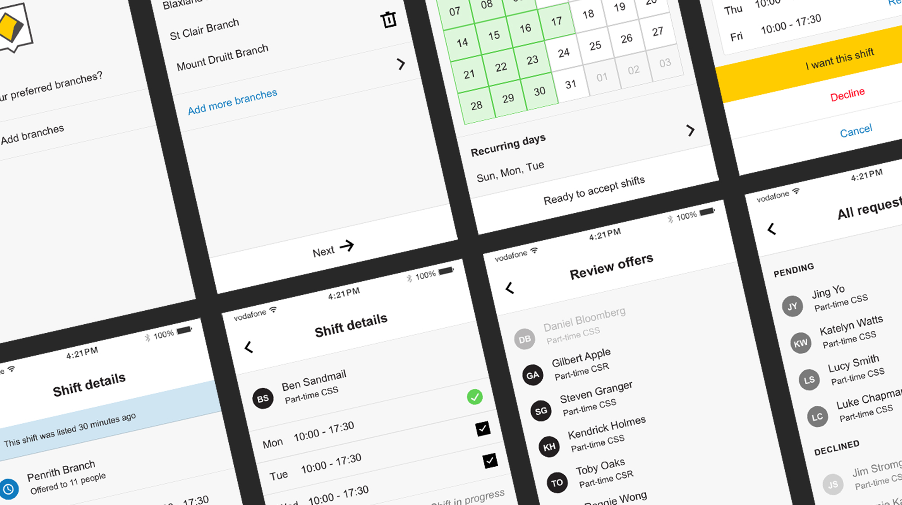
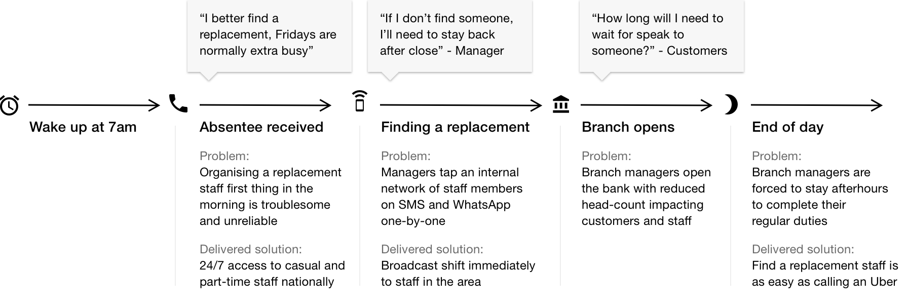
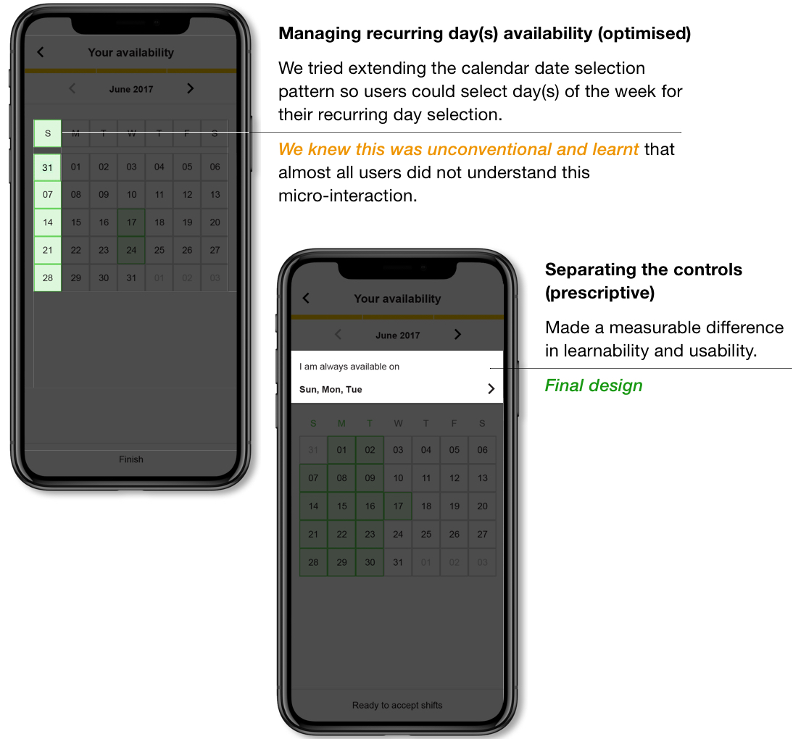
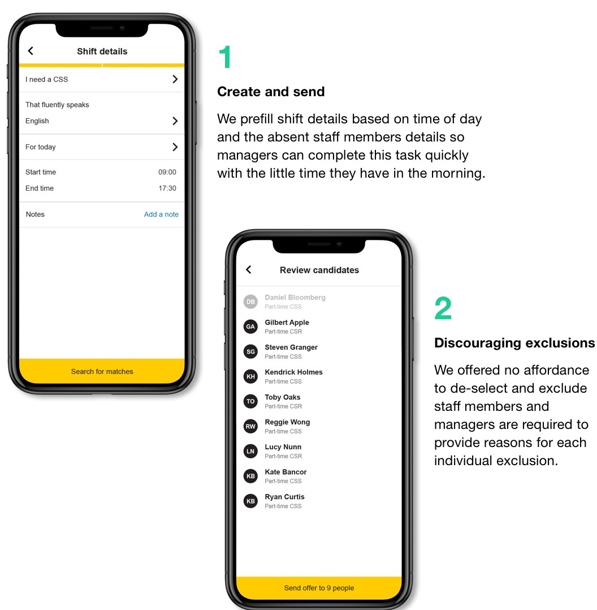
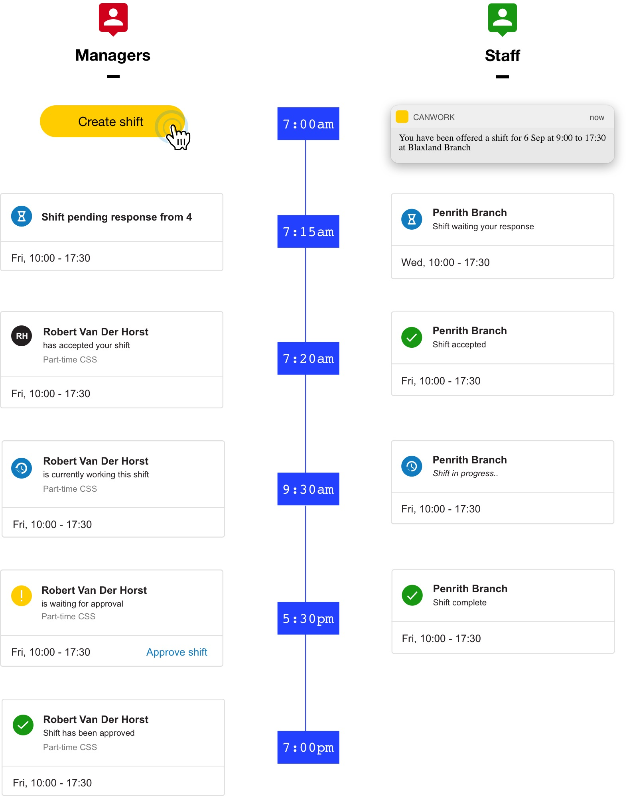
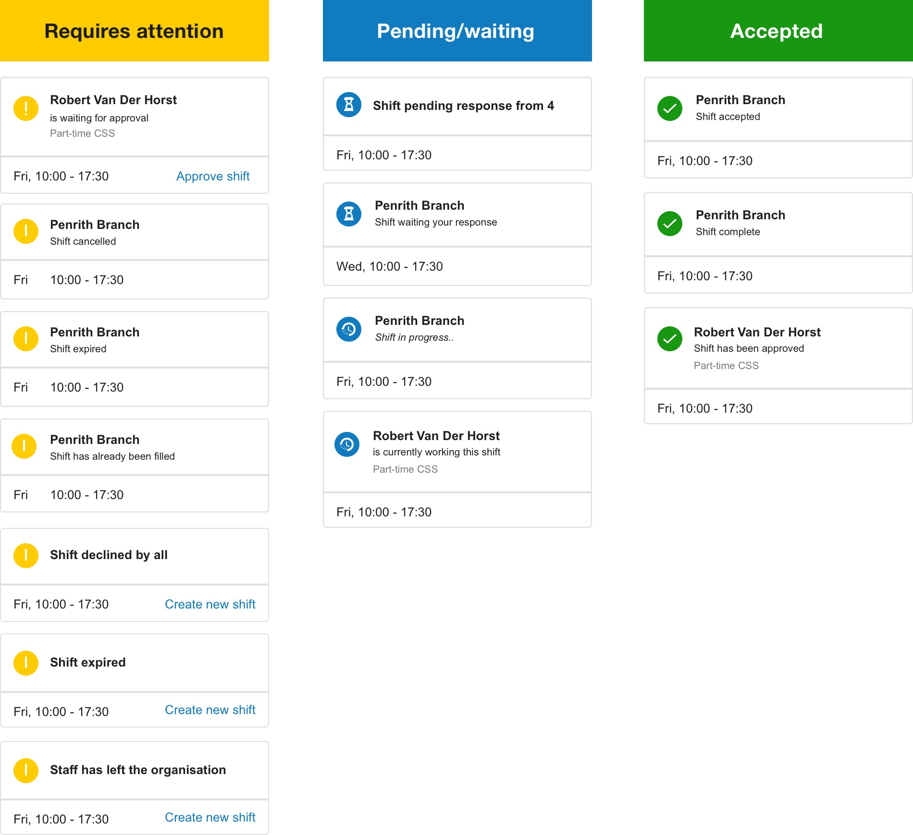
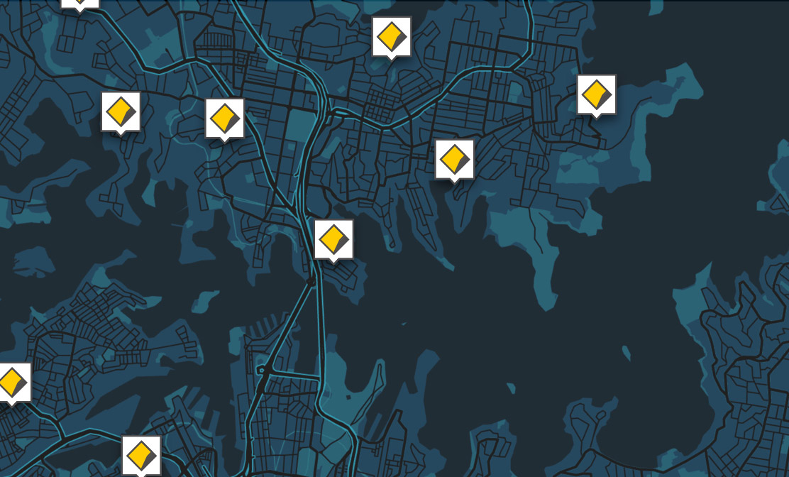
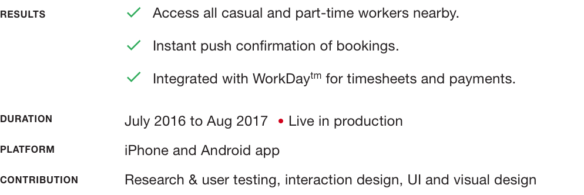

CommBank Enterprise Staff Resourcing Mobile App (2017)
1000's of staff in over 900 branch locations. Frequent requests for personal, vacation and sick leave impacts our ability to service customers. We designed a mobile app that gives managers the ability to tap the whole CommBank network to find a CBA staff to work in their branch.
Project overview
Finding a suitable replacement when staff were sick or needed time off proved difficult for managers in branches around Australia - CommBank needed a better way to allocate and track adhoc shifts
Finding contingent staff members - user journey

Managing availability
Staff are asked to continually manage and maintain both recurring and single date availability so they’re alerted when new shifts are broadcasted

Shift creation
This mobile app provides a platform for managers to broadcast shifts to our network of casual and part-time staff members instantly — our challenge was to balance giving managers control, fair allocation of shifts and discouraging favouritism

Shift lifecycle and state permutations
A single shift will go through several permutations over the course of a single working day — our system effectively keeps both parties up to date

Information architecture and visual hierarchy
Towards the end, our IA became convoluted and chaotic — we designed a simple system to sort shift states by drawing a line between statuses that ‘requires attention’ and ‘good to know’
It was important to create a distinct visual language for actions that required action or attention from the user.

Project results
All adhoc shift work are now brokered and paid using this mobile app. All casual and part-time staff have opportunities to pick up additional work in locations around their area — managers don’t have to sweat over finding additional staff at a moments notice and frequently working overtime when there is reduced headcount

